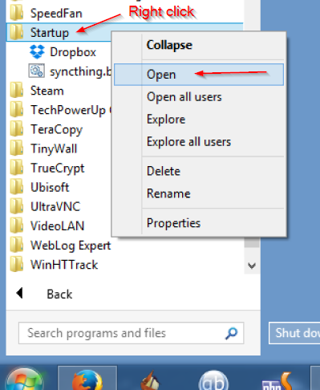
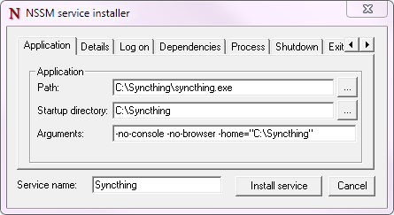

Starting Syncthing Automatically
Упозорење
This page may be outdated and requires review.
Windows
There is currently no official installer available for Windows. However, there are a number of easy solutions.
Task Scheduler
Start the Task Scheduler
Create a New Task („Action” menu -> „Create Task…”)
- General Tab:
Name the task (for example ’Syncthing’)
Check „Run whether user is logged on or not”
- Triggers Tab:
Click „New…”
Set „Begin the task” to „At Startup”
(optional) choose a delay
Make sure Enabled is checked
Click „OK”
- Actions Tab:
Click „New…”
[Action] should be set as „Start a program”
Enter the path to syncthing.exe in „Program/Script”
(optional) Enter „-no-console -no-browser” for „Add arguments (optional)”
Click „OK”
- Settings Tab:
(recommended) Keep the checkbox on „Allow task to be run on demand”
Clear checkbox from „Stop task if it runs longer than:”
(recommended) Keep „Do not start a new instance” for „If the task is already running, then the following rule applies”
Click OK
Enter password for the user.
Third-party Tools
There are a number of third-party utilities which aim to address this issue. These typically provide an installer, let Syncthing start automatically, and a more polished user experience (e.g. by behaving as a „proper” Windows application, rather than forcing you to start your browser to interact with Syncthing).
See also
Start on Login
Starting Syncthing on login, without a console window or browser opening on start, is relatively easy.
Find the correct link of the Windows binary from the Syncthing website (choose amd64 if you have a 64-bit version of Windows)
Extract the files in the folder (
syncthing-windows-*) in the zip to the folderC:\syncthingGo to the
C:\syncthingfolder, make a file namedsyncthing.batRight-click the file and choose Edit. The file should open in Notepad or your default text editor.
Paste the following command into the file and save the changes:
start "Syncthing" syncthing.exe -no-console -no-browserRight-click on
syncthing.batand press „Create Shortcut”Right-click the shortcut file
syncthing.bat - Shortcutand click CopyClick Start, click All Programs, then click Startup. Right-click on Startup then click Open.

Paste the shortcut (right-click in the folder and choose Paste, or press
CTRL+V)
Syncthing will now automatically start the next time you open a new Windows session. No console or browser window will pop-up. Access the interface by browsing to http://localhost:8384/
If you prefer slower indexing but a more responsive system during scans, copy the following command instead of the command in step 5:
start "Syncthing" /low syncthing.exe -no-console -no-browser
Run as a service independent of user login
Упозорење
There are important security considerations with this approach. If you do not secure Syncthing’s GUI (and REST API), then any process running with any permissions can read/write any file on your filesystem, by opening a connection with Syncthing.
Therefore, you must ensure that you set a GUI password, or run Syncthing as an unprivileged user.
With the above configuration, Syncthing only starts when a user logs on to the machine. This is not optimal on servers where a machine can run long times after a reboot without anyone logged in. In this case it is best to create a service that runs as soon as Windows starts. This can be achieved using NSSM, the „Non-Sucking Service Manager”.
Note that starting Syncthing on login is the preferred approach for almost any end-user scenario. The only scenario where running Syncthing as a service makes sense is for (mostly) headless servers, administered by a sysadmin who knows enough to understand the security implications.
Download and extract nssm to a folder where it can stay. The NSSM executable performs administration as well as executing as the Windows service so it will need to be kept in a suitable location.
From an administrator Command Prompt, CD to the NSSM folder and run
nssm.exe install syncthingApplication Tab
Set Path to your
syncthing.exeand enter-no-restart -no-browser -home="<path to your Syncthing folder>"as Arguments. Note: Logging is set later on.-logfilehere will not be applied.
Details Tab
Optional: Set Startup type to Automatic (Delayed Start) to delay the start of Syncthing when the system first boots, to improve boot speed.
Log On Tab
Enter the user account to run Syncthing as. This user needs to have access to all the synced folders. You can leave this as Local System but doing so poses security risks. Setting this to your Windows user account will reduce this; ideally create a dedicated user account with minimal permissions.
Process Tab
Optional: Change priority to Low if you want a more responsive system at the cost of somewhat longer sync time when the system is busy.
Optional: To enable logging enable „Console window”.
Shutdown Tab
To ensure Syncthing is shut down gracefully select all of the checkboxes and set all Timeouts to 10000ms.
Exit Actions Tab
Set Restart Action to Stop service (oneshot mode). Specific settings are used later for handling Syncthing exits, restarts and upgrades.
I/O Tab
Optional: To enable logging set Output (stdout) to the file desired for logging. The Error field will be automatically set to the same file.
File Rotation Tab
Optional: Set the rotation settings to your preferences.
Click the Install Service Button
To ensure that Syncthing exits, restarts and upgrades are handled correctly by the Windows service manager, some final settings are needed. Execute these in the same Commant Prompt:
nssm set syncthing AppExit Default Exitnssm set syncthing AppExit 0 Exitnssm set syncthing AppExit 3 Restartnssm set syncthing AppExit 4 Restart
Start the service via
sc start syncthingin the Command Prompt.Connect to the Syncthing UI, enable HTTPS, and set a secure username and password.
Mac OS X
Using homebrew
brew install syncthingFollow the information presented by
brewto autostart Syncthing using launchctl.
Without homebrew
Download and extract Syncthing for Mac: https://github.com/syncthing/syncthing/releases/latest.
Copy the syncthing binary (the file you would open to launch Syncthing) into a directory called
binin your home directory i.e. into /home/<username>/bin. If „bin” does not exist, create it.Open
syncthing.plistlocated in /etc/macosx-launchd. Replace the four occurrences of /Users/USERNAME with your actual home directory location.Copy the
syncthing.plistfile to~/Library/LaunchAgents. If you have trouble finding this location select the „Go” menu in Finder and choose „Go to folder…” and then type~/Library/LaunchAgents. Copying to ~/Library/LaunchAgents will require admin password in most cases.Log out and back in again. Or, if you do not want to log out, you can run this command in terminal:
launchctl load ~/Library/LaunchAgents/syncthing.plist
Note: You probably want to turn off „Start Browser” in the web GUI settings to avoid it opening a browser window on each login. Then, to access the GUI type 127.0.0.1:8384 (by default) into Safari.
Linux
On Ubuntu-like systems
Launch the program ’Startup Applications’.
Click ’Add’.
Fill out the form:
Name: Syncthing
Command:
/path/to/syncthing/binary -no-browser -home="/home/your\_user/.config/syncthing"
Using Supervisord
Add the following to your /etc/supervisord.conf file:
[program:syncthing]
command = /path/to/syncthing/binary -no-browser -home="/home/some_user/.config/syncthing"
directory = /home/some_user/
autorestart = True
user = some_user
environment = STNORESTART="1", HOME="/home/some_user"
Using systemd
systemd is a suite of system management daemons, libraries, and utilities designed as a central management and configuration platform for the Linux computer operating system. It also offers users the ability to manage services under the user’s control with a per-user systemd instance, enabling users to start, stop, enable, and disable their own units. Service files for systemd are provided by Syncthing and can be found in etc/linux-systemd.
You have two primary options: You can set up Syncthing as a system service, or a user service.
Running Syncthing as a system service ensures that Syncthing is run at startup even if the Syncthing user has no active session. Since the system service keeps Syncthing running even without an active user session, it is intended to be used on a server.
Running Syncthing as a user service ensures that Syncthing only starts after the user has logged into the system (e.g., via the graphical login screen, or ssh). Thus, the user service is intended to be used on a (multiuser) desktop computer. It avoids unnecessarily running Syncthing instances.
Several distros (including arch linux) ship the needed service files with the Syncthing package. If your distro provides a systemd service file for Syncthing, you can skip step 2 when you setting up either the system service or the user service, as described below.
How to set up a system service
Create the user who should run the service, or choose an existing one.
Copy the
Syncthing/etc/system/syncthing@.servicefile into the load path of the system instance.Enable and start the service. Replace „myuser” with the actual Syncthing user after the
@:systemctl enable syncthing@myuser.service systemctl start syncthing@myuser.service
How to set up a user service
Create the user who should run the service, or choose an existing one. Probably this will be your own user account.
Copy the
Syncthing/etc/user/syncthing.servicefile into the load path of the user instance. To do this without root privileges you can just use this folder under your home directory:~/.config/systemd/user/.Enable and start the service:
systemctl --user enable syncthing.service systemctl --user start syncthing.service
Checking the service status
To check if Syncthing runs properly you can use the status
subcommand. To check the status of a system service:
systemctl status syncthing@myuser.service
To check the status of a user service:
systemctl --user status syncthing.service
Using the journal
Systemd logs everything into the journal, so you can easily access Syncthing log
messages. In both of the following examples, -e tells the pager to jump to
the very end, so that you see the most recent logs.
To see the logs for the system service:
journalctl -e -u syncthing@myuser.service
To see the logs for the user service:
journalctl -e --user-unit=syncthing.service
Permissions
If you enabled the Ignore Permissions option in the Syncthing client’s
folder settings, then you will also need to add the line UMask=0002 (or any
other umask setting <http://www.tech-faq.com/umask.html> you like) in the
[Service] section of the syncthing@.service file.
Debugging
If you are asked on the bugtracker to start Syncthing with specific environment variables it will not work the normal way. Systemd isolates each service and it cannot access global environment variables. The solution is to add the variables to the service file instead.
To edit the system service, run:
systemctl edit syncthing@myuser.service
To edit the user service, run:
systemctl --user edit syncthing.service
This will create an additional configuration file automatically and you
can define (or overwrite) further service parameters like e.g.
Environment=STTRACE=model.